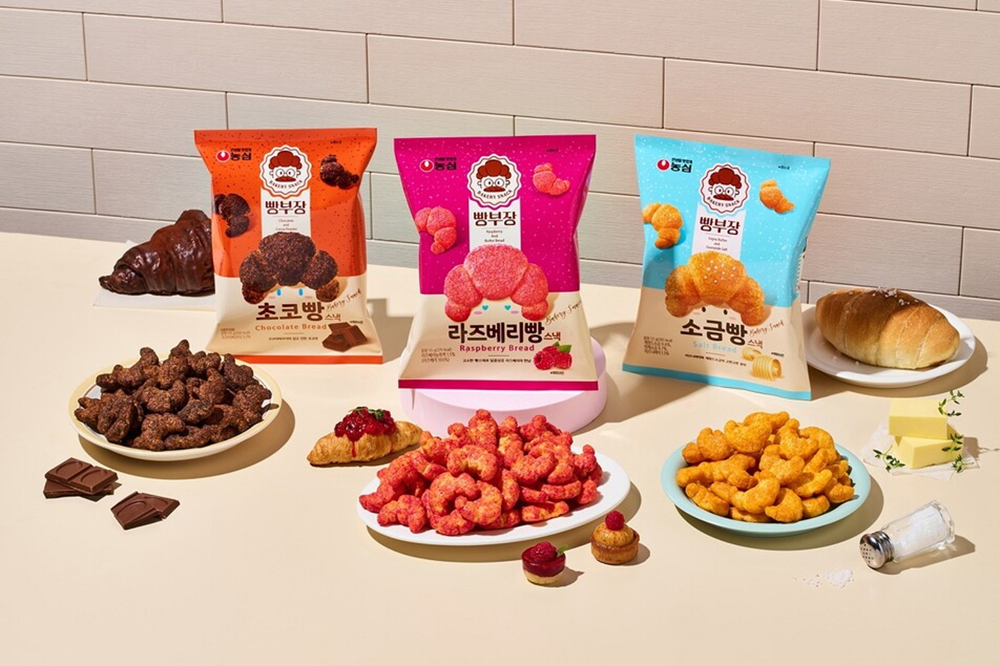

빵부장 시리즈
농심 빵부장 — 소금빵·초코빵·솔티꽈배기 등 빵 모양·맛을 재현한 베이커리 스낵.
빵부장은 농심의 베이커리 스낵 브랜드입니다. 크루아상·소금빵·초코빵 맛에 이어 솔티꽈배기 등, 빵집 메뉴를 바삭한 스낵으로 옮긴 라인업이 편의점·마트에 함께 진열되는 경우가 많습니다.
한 가지만 골라도 되고, 여러 맛을 모아 선물 세트로 구성해도 좋습니다. 제품명이 시즌마다 바뀔 수 있습니다.
빵부장은 농심의 베이커리 스낵 브랜드입니다. 크루아상·소금빵·초코빵 맛에 이어 솔티꽈배기 등, 빵집 메뉴를 바삭한 스낵으로 옮긴 라인업이 편의점·마트에 함께 진열되는 경우가 많습니다.
한 가지만 골라도 되고, 여러 맛을 모아 선물 세트로 구성해도 좋습니다. 제품명이 시즌마다 바뀔 수 있습니다.
사는 팁
구매 팁 ‘농심 빵부장’ 로고·제품명을 확인하고, 알레르기(밀·유제품) 표시를 보세요.